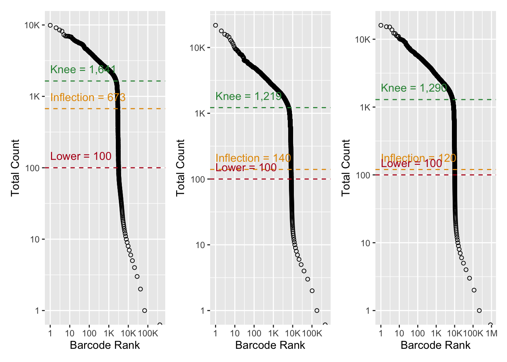

renv::restore()* The library is already synchronized with the lockfile.Restore project dependencies:
Nearest neighbor detection:
Singular value decomposition:
Parallel evaluation:
Load Bioconductor package(s):
Loading required package: SingleCellExperimentLoading required package: SummarizedExperimentLoading required package: MatrixGenericsLoading required package: matrixStatsWarning: package 'matrixStats' was built under R version 4.1.2
Attaching package: 'MatrixGenerics'The following objects are masked from 'package:matrixStats':
colAlls, colAnyNAs, colAnys, colAvgsPerRowSet, colCollapse,
colCounts, colCummaxs, colCummins, colCumprods, colCumsums,
colDiffs, colIQRDiffs, colIQRs, colLogSumExps, colMadDiffs,
colMads, colMaxs, colMeans2, colMedians, colMins, colOrderStats,
colProds, colQuantiles, colRanges, colRanks, colSdDiffs, colSds,
colSums2, colTabulates, colVarDiffs, colVars, colWeightedMads,
colWeightedMeans, colWeightedMedians, colWeightedSds,
colWeightedVars, rowAlls, rowAnyNAs, rowAnys, rowAvgsPerColSet,
rowCollapse, rowCounts, rowCummaxs, rowCummins, rowCumprods,
rowCumsums, rowDiffs, rowIQRDiffs, rowIQRs, rowLogSumExps,
rowMadDiffs, rowMads, rowMaxs, rowMeans2, rowMedians, rowMins,
rowOrderStats, rowProds, rowQuantiles, rowRanges, rowRanks,
rowSdDiffs, rowSds, rowSums2, rowTabulates, rowVarDiffs, rowVars,
rowWeightedMads, rowWeightedMeans, rowWeightedMedians,
rowWeightedSds, rowWeightedVarsLoading required package: GenomicRangesLoading required package: stats4Loading required package: BiocGenericsLoading required package: parallel
Attaching package: 'BiocGenerics'The following objects are masked from 'package:parallel':
clusterApply, clusterApplyLB, clusterCall, clusterEvalQ,
clusterExport, clusterMap, parApply, parCapply, parLapply,
parLapplyLB, parRapply, parSapply, parSapplyLBThe following objects are masked from 'package:stats':
IQR, mad, sd, var, xtabsThe following objects are masked from 'package:base':
anyDuplicated, append, as.data.frame, basename, cbind, colnames,
dirname, do.call, duplicated, eval, evalq, Filter, Find, get, grep,
grepl, intersect, is.unsorted, lapply, Map, mapply, match, mget,
order, paste, pmax, pmax.int, pmin, pmin.int, Position, rank,
rbind, Reduce, rownames, sapply, setdiff, sort, table, tapply,
union, unique, unsplit, which.max, which.minLoading required package: S4Vectors
Attaching package: 'S4Vectors'The following objects are masked from 'package:base':
expand.grid, I, unnameLoading required package: IRangesLoading required package: GenomeInfoDbLoading required package: BiobaseWelcome to Bioconductor
Vignettes contain introductory material; view with
'browseVignettes()'. To cite Bioconductor, see
'citation("Biobase")', and for packages 'citation("pkgname")'.
Attaching package: 'Biobase'The following object is masked from 'package:MatrixGenerics':
rowMediansThe following objects are masked from 'package:matrixStats':
anyMissing, rowMediansLoad CRAN package(s):
Source project function(s):
Read experiment objects(s):
Compute barcode rank statistics and identify the knee and inflection points on the total count curve.
Plot barcode rank statistics and annotate the knee and inflection points on the total count curve.
Loading required package: ggplot2Loading required package: scalesWarning: package 'scales' was built under R version 4.1.2Warning: `label_number_si()` was deprecated in scales 1.2.0.
Please use the `scale_cut` argument of `label_number()` instead.
This warning is displayed once every 8 hours.
Call `lifecycle::last_lifecycle_warnings()` to see where this warning was generated.Warning: Transformation introduced infinite values in continuous y-axis
Transformation introduced infinite values in continuous y-axis
Transformation introduced infinite values in continuous y-axis
Identify empty droplets:
Identify empty droplets and return results for barcodes with total UMI count less than or equal to 100:
Plot distribution of the Monte Carlo p-value against the null model:
Filter empty droplets:
Save experiment object(s):
Print session information
R version 4.1.1 (2021-08-10)
Platform: x86_64-apple-darwin17.0 (64-bit)
Running under: macOS Big Sur 10.16
Matrix products: default
BLAS: /Library/Frameworks/R.framework/Versions/4.1/Resources/lib/libRblas.0.dylib
LAPACK: /Library/Frameworks/R.framework/Versions/4.1/Resources/lib/libRlapack.dylib
locale:
[1] en_GB.UTF-8/en_GB.UTF-8/en_GB.UTF-8/C/en_GB.UTF-8/en_GB.UTF-8
attached base packages:
[1] parallel stats4 stats graphics grDevices utils datasets
[8] methods base
other attached packages:
[1] scales_1.2.0 ggplot2_3.3.6
[3] patchwork_1.1.1 DropletUtils_1.12.3
[5] SingleCellExperiment_1.14.1 SummarizedExperiment_1.22.0
[7] Biobase_2.52.0 GenomicRanges_1.44.0
[9] GenomeInfoDb_1.28.4 IRanges_2.26.0
[11] S4Vectors_0.30.2 BiocGenerics_0.38.0
[13] MatrixGenerics_1.4.3 matrixStats_0.62.0
[15] BiocParallel_1.26.2 BiocSingular_1.8.1
[17] BiocNeighbors_1.10.0
loaded via a namespace (and not attached):
[1] edgeR_3.34.1 jsonlite_1.8.0
[3] DelayedMatrixStats_1.14.3 scuttle_1.2.1
[5] R.utils_2.11.0 assertthat_0.2.1
[7] dqrng_0.3.0 renv_0.15.4
[9] GenomeInfoDbData_1.2.6 yaml_2.3.5
[11] pillar_1.7.0 lattice_0.20-45
[13] glue_1.6.2 limma_3.48.3
[15] beachmat_2.8.1 digest_0.6.29
[17] XVector_0.32.0 colorspace_2.0-3
[19] htmltools_0.5.2 Matrix_1.4-1
[21] R.oo_1.24.0 pkgconfig_2.0.3
[23] zlibbioc_1.38.0 purrr_0.3.4
[25] ScaledMatrix_1.0.0 HDF5Array_1.20.0
[27] tibble_3.1.6 farver_2.1.0
[29] generics_0.1.2 ellipsis_0.3.2
[31] withr_2.5.0 cli_3.3.0
[33] magrittr_2.0.3 crayon_1.5.1
[35] evaluate_0.15 R.methodsS3_1.8.1
[37] fansi_1.0.3 tools_4.1.1
[39] lifecycle_1.0.1 stringr_1.4.0
[41] Rhdf5lib_1.14.2 munsell_0.5.0
[43] locfit_1.5-9.5 DelayedArray_0.18.0
[45] irlba_2.3.5 compiler_4.1.1
[47] rsvd_1.0.5 rlang_1.0.2
[49] rhdf5_2.36.0 grid_4.1.1
[51] RCurl_1.98-1.6 rhdf5filters_1.4.0
[53] rstudioapi_0.13 htmlwidgets_1.5.4
[55] labeling_0.4.2 bitops_1.0-7
[57] rmarkdown_2.14 gtable_0.3.0
[59] DBI_1.1.2 R6_2.5.1
[61] knitr_1.39 dplyr_1.0.9
[63] fastmap_1.1.0 utf8_1.2.2
[65] stringi_1.7.6 Rcpp_1.0.8.3
[67] vctrs_0.4.1 tidyselect_1.1.2
[69] xfun_0.30 sparseMatrixStats_1.4.2